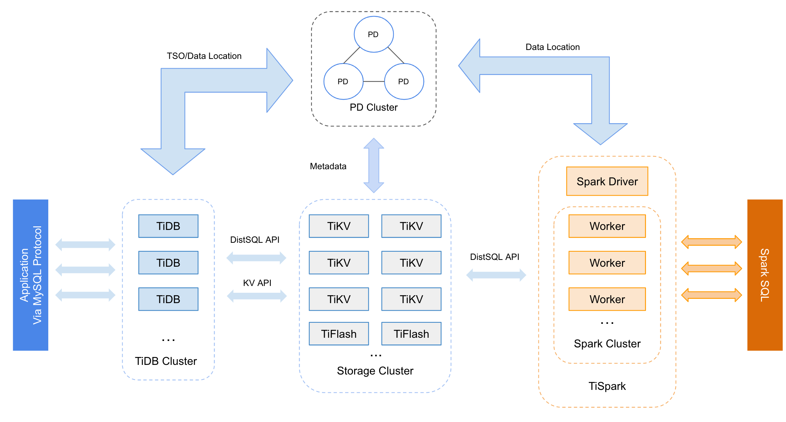

学习时长：
10min
课程收获：
对 TiDB 的核心组件和生态工具的功能有一定的理解
课程内容：
本课程简要介绍了 TiDB 核心系统的各个组件以及部分 TiDB 的生态工具
TiDB 整体架构
与传统的单机数据库相比，TiDB 具有以下优势：
- 纯分布式架构，拥有良好的扩展性，支持弹性的扩缩容
- 支持 SQL，对外暴露 MySQL 的网络协议，并兼容大多数 MySQL 的语法，在大多数场景下可以直接替换 MySQL
- 默认支持高可用，在少数副本失效的情况下，数据库本身能够自动进行数据修复和故障转移，对业务透明
- 支持 ACID 事务，对于一些有强一致需求的场景友好，例如：银行转账
- 具有丰富的工具链生态，覆盖数据迁移、同步、备份等多种场景
在内核设计上，TiDB 分布式数据库将整体架构拆分成了多个模块，各模块之间互相通信，组成完整的 TiDB 系统。对应的架构图如下：

- TiDB Server：SQL 层，对外暴露 MySQL 协议的连接 endpoint，负责接受客户端的连接，执行 SQL 解析和优化，最终生成分布式执行计划。TiDB 层本身是无状态的，实践中可以启动多个 TiDB 实例，通过负载均衡组件（如 LVS、HAProxy 或 F5）对外提供统一的接入地址，客户端的连接可以均匀地分摊在多个 TiDB 实例上以达到负载均衡的效果。TiDB Server 本身并不存储数据，只是解析 SQL，将实际的数据读取请求转发给底层的存储节点 TiKV（或 TiFlash）。
- PD Server：整个 TiDB 集群的元信息管理模块，负责存储每个 TiKV 节点实时的数据分布情况和集群的整体拓扑结构，提供 TiDB Dashboard 管控界面，并为分布式事务分配事务 ID。PD 不仅存储元信息，同时还会根据 TiKV 节点实时上报的数据分布状态，下发数据调度命令给具体的 TiKV 节点，可以说是整个集群的“大脑”。此外，PD 本身也是由至少 3 个节点构成，拥有高可用的能力。建议部署奇数个 PD 节点。
- 存储节点
- TiKV Server：负责存储数据，从外部看 TiKV 是一个分布式的提供事务的 Key-Value 存储引擎。存储数据的基本单位是 Region，每个 Region 负责存储一个 Key Range（从 StartKey 到 EndKey 的左闭右开区间）的数据，每个 TiKV 节点会负责多个 Region。TiKV 的 API 在 KV 键值对层面提供对分布式事务的原生支持，默认提供了 SI (Snapshot Isolation) 的隔离级别，这也是 TiDB 在 SQL 层面支持分布式事务的核心。TiDB 的 SQL 层做完 SQL 解析后，会将 SQL 的执行计划转换为对 TiKV API 的实际调用。所以，数据都存储在 TiKV 中。另外，TiKV 中的数据都会自动维护多副本（默认为三副本），天然支持高可用和自动故障转移。
- TiFlash：TiFlash 是一类特殊的存储节点。和普通 TiKV 节点不一样的是，在 TiFlash 内部，数据是以列式的形式进行存储，主要的功能是为分析型的场景加速。
TiDB 的生态工具
全量导出
Dumpling 是一个用于从 MySQL/TiDB 进行全量逻辑导出的工具。
基本信息：
- Dumpling 的输入：MySQL/TiDB 集群
- Dumpling 的输出：SQL/CSV 文件
- 适用 TiDB 版本：所有版本
- Kubernetes 支持：尚未支持
全量导入
TiDB Lightning 是一个用于将全量数据导入到 TiDB 集群的工具。
使用 TiDB Lightning 导入数据到 TiDB 时，有三种模式：
local模式：TiDB Lightning 将数据解析为有序的键值对，并直接将其导入 TiKV。这种模式一般用于导入大量的数据（TB 级别）到新集群，但在数据导入过程中集群无法提供正常的服务。importer模式：和local模式类似，但是需要部署额外的组件tikv-importer协助完成键值对的导入。对于 4.0 以上的目标集群，请优先使用local模式进行导入。tidb模式：以 TiDB/MySQL 作为后端，这种模式相比local和importer模式的导入速度较慢，但是可以在线导入，同时也支持将数据导入到 MySQL。
基本信息：
- Lightning 的输入：
- Dumpling 输出文件
- 其他格式兼容的 CSV 文件
- 适用 TiDB 版本：v2.1 及以上
- Kubernetes 支持：使用 TiDB Lightning 快速恢复 Kubernetes 上的 TiDB 集群数据
注意：
原 Loader 工具已停止维护，不再推荐使用。相关场景请使用 TiDB Lightning 的
tidb模式进行替代，详细信息请参考 TiDB Lightning TiDB-backend 文档。
备份和恢复
BR 是一个对 TiDB 进行分布式备份和恢复的工具，可以高效地对大数据量的 TiDB 集群进行数据备份和恢复。
基本信息：
- 备份输出和恢复输入的文件类型：SST +
backupmeta文件 - 适用 TiDB 版本：v3.1 及 v4.0
- Kubernetes 支持：使用 BR 工具备份 TiDB 集群数据到兼容 S3 的存储, 使用 BR 工具恢复 S3 兼容存储上的备份数据
TiDB 增量日志同步
TiDB Binlog 是收集 TiDB 的增量 binlog 数据，并提供准实时同步和备份的工具。该工具可用于 TiDB 集群间的增量数据同步，如将其中一个 TiDB 集群作为另一个 TiDB 集群的从集群。
基本信息：
- TiDB Binlog 的输入：TiDB 集群
- TiDB Binlog 的输出：TiDB 集群、MySQL、Kafka 或者增量备份文件
- 适用 TiDB 版本：v2.1 及以上
- Kubernetes 支持：TiDB Binlog 运维文档，Kubernetes 上的 TiDB Binlog Drainer 配置
数据迁入
TiDB Data Migration (DM) 是将 MySQL/MariaDB 数据迁移到 TiDB 的工具，支持全量数据和增量数据的迁移。
基本信息：
- DM 的输入：MySQL/MariaDB
- DM 的输出：TiDB 集群
- 适用 TiDB 版本：所有版本
- Kubernetes 支持：开发中
如果数据量在 TB 级别以下，推荐直接使用 DM 迁移 MySQL/MariaDB 数据到 TiDB（迁移的过程包括全量数据的导出导入和增量数据的同步）。
如果数据量在 TB 级别，推荐的迁移步骤如下：
- 使用 Dumpling 导出 MySQL/MariaDB 全量数据。
- 使用 TiDB Lightning 将全量导出数据导入 TiDB 集群。
- 使用 DM 迁移 MySQL/MariaDB 增量数据到 TiDB。